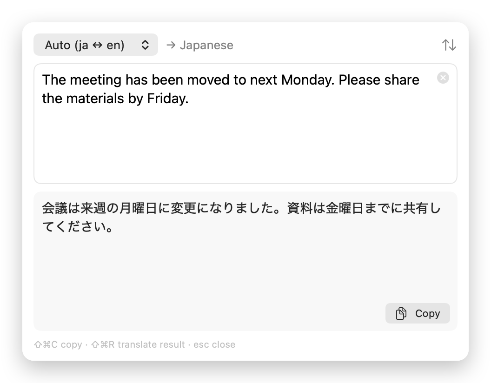

できること
- Mac の中だけで翻訳
- モデルは llama.cpp で Mac 上で動きます。アカウントも API キーも不要で、ネットワークを使うのはモデルのダウンロードのときだけです。
- どのアプリでも
- テキストを選んで ⌃⌥T を押すか、右クリックの「サービス」から翻訳できます。
- 日本語と英語
- 標準は日本語 ⇄ 英語。中国語、韓国語、フランス語、ドイツ語、スペイン語にも翻訳できます。
- ポップアップとエディタ
- ポインタの横に小さなポップアップを表示します。⌘E で、入力しながら翻訳するエディタが開きます。
- 2 つのモデルサイズ
- 速い 0.8B（573 MB、既定）と高品質な 2B（1.8 GB）。選んだモデルだけをダウンロードし、固定した SHA-256 で検証します。
- メモリにやさしい
- 既定のモデルで使うメモリは約 0.8 GB。5 分使わなければ解放します。モデルを読み込んだ後なら、1 文の翻訳は 1 秒もかかりません。

インストール
Konnyaku は Apple の公証を受けていません（有料の開発者アカウントが必要なため）。そのため、初回起動のときだけ macOS で許可が必要です。
- GitHub の Releases から
Konnyaku-<version>-arm64.dmgをダウンロードして開き、Konnyaku を「アプリケーション」へドラッグします。 - Konnyaku を開き、表示される警告を閉じます。
- システム設定 →「プライバシーとセキュリティ」を開いて下までスクロールし、Konnyaku の横の「このまま開く」をクリックします。
- アクセシビリティの許可を求められたら許可します。選んだテキストを読み取るために使います。
ターミナルを使う場合は、隔離属性を外す方法もあります。
xattr -dr com.apple.quarantine /Applications/Konnyaku.appオープンソース
Konnyaku は MIT ライセンスの Swift 製アプリです。コードを読んだり、問題を報告したり、自分でビルドしたりするには GitHub へ。スクリプトから使えるコマンドライン版もあります。